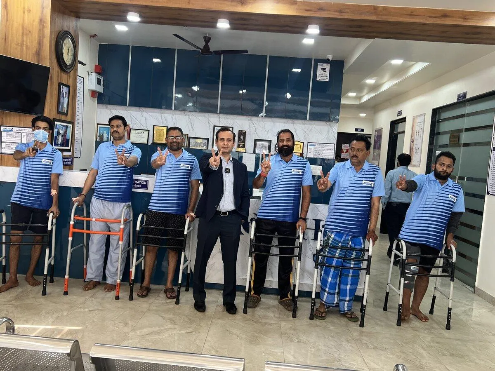
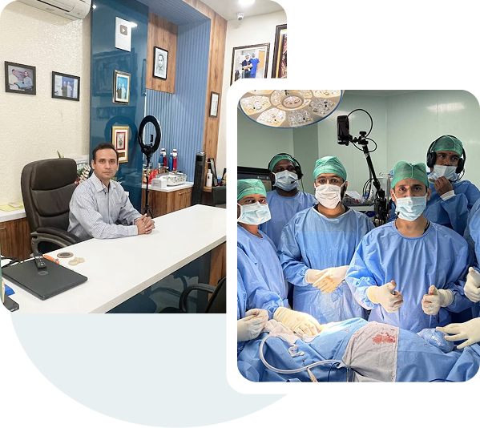
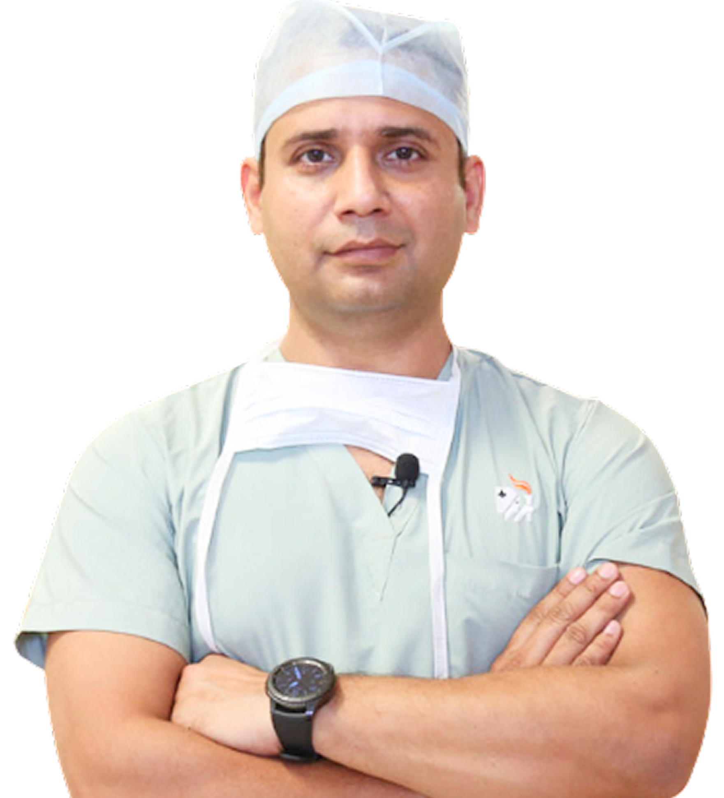
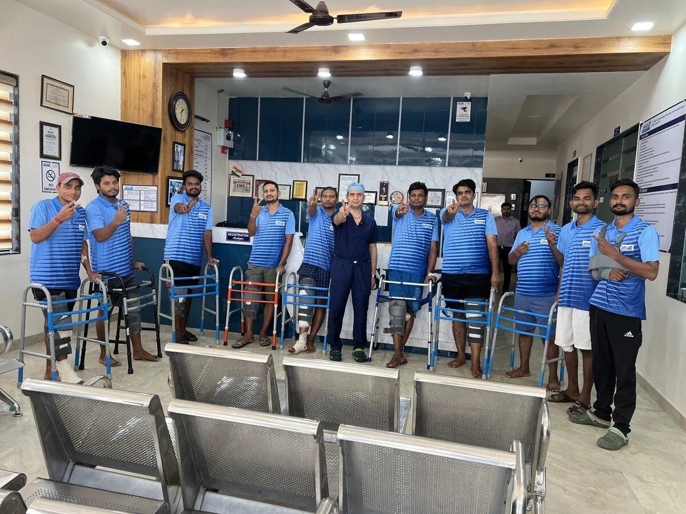
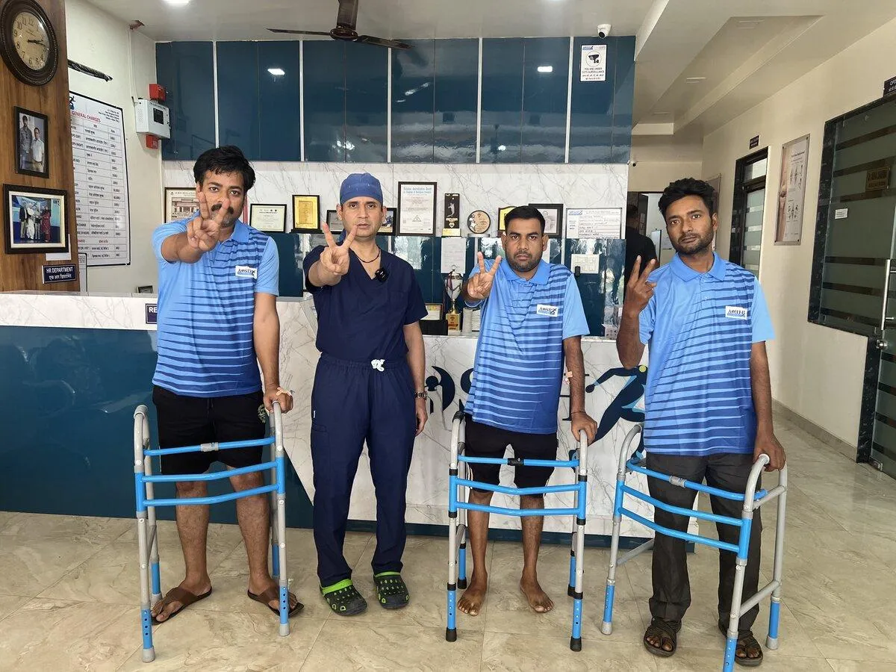
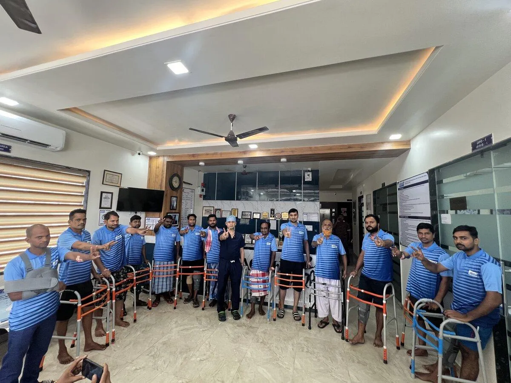
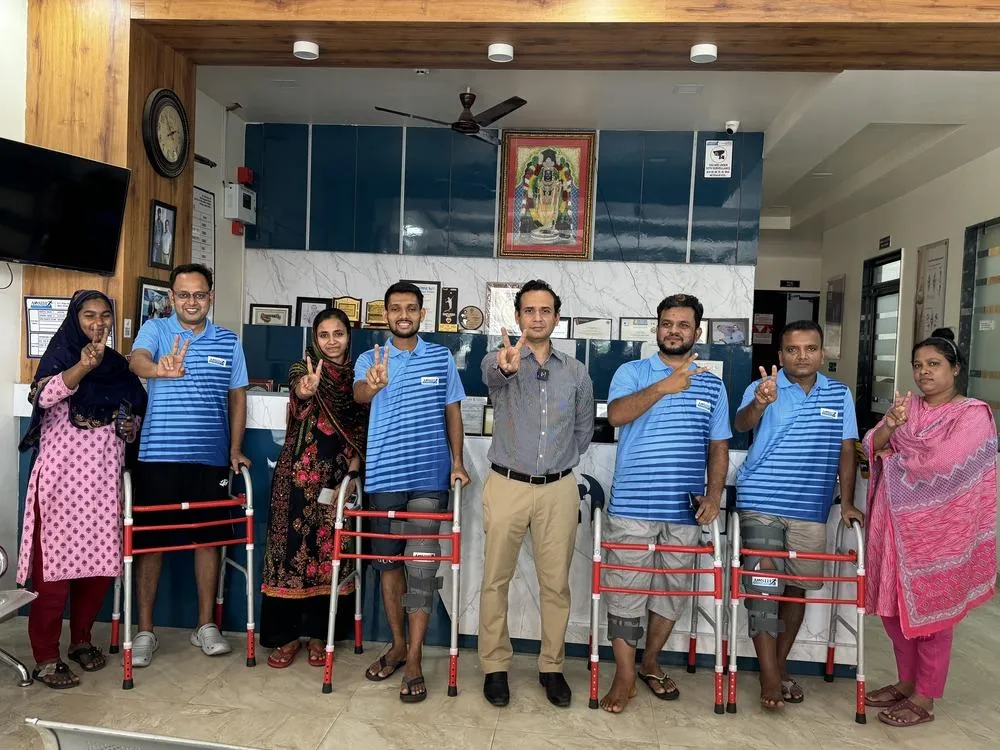
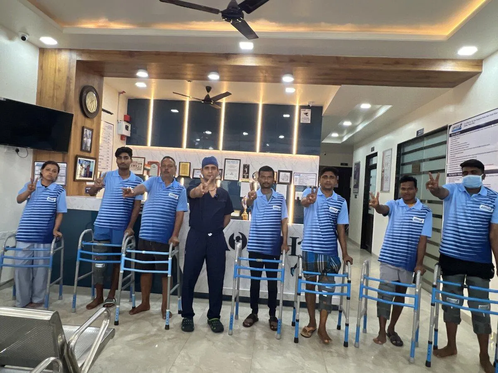

A Specialized Orthopedic Institute Built on Precision & Empathy
Advance Orthopedic & Sports Injury Hospital (AOSIH) was established under the visionary leadership of Dr. Naveen Sharma to deliver world-class joint care, tissue-preserving surgical science, and rapid recovery protocols to patients suffering from debilitating knee, hip, and shoulder conditions.
Centrally located at E-7, Hanuman Path, Near Metro Pillar 95, New Sanganer Road, Sodala, Jaipur, our hospital is engineered specifically around the unique requirements of orthopedic, arthroplasty, and sports medicine patients. Every clinical protocol—from pre-operative digital 3D templating and Class 100 laminar airflow operating suites to Day-1 post-op ambulation and dedicated tele-rehabilitation—is designed to eliminate surgical risks and accelerate your return to an active, pain-free life.


Dr. Naveen Sharma — Medical Director & Senior Joint Surgeon
Dr. Naveen Sharma (MS Ortho, MBBS) is recognized as one of India's foremost authorities on Direct Anterior Approach (DAA) Hip Replacement and Subvastus Muscle-Sparing Knee Arthroplasty.

Dr. Naveen Sharma
Recognized as Rajasthan’s foremost authority on Direct Anterior Approach (DAA) Hip Replacement and Subvastus Fast-Track Knee Arthroplasty with over 21 years of surgical tenure and 20,000+ completed procedures.
Academic Rigor & International Training
- Master of Surgery (MS Orthopedics): King Edward Memorial (KEM) Hospital and Seth G.S. Medical College, Mumbai — one of India's premier apex orthopedic institutes.
- Senior Residency (AIIMS, New Delhi): Handled tertiary complex trauma, joint reconstruction, and pelvic acetabular trauma at India's highest medical institution.
- ISAKOS Fellowship (Germany): Specialized in advanced arthroscopic knee and shoulder ligament reconstructions under international faculty.
- Arthroplasty Fellowship (South Korea): Intensive training in high-flexion knee replacement and navigation-assisted surgical techniques.
- Pioneer in DAA Hip Replacement: Spearheading the true muscle-sparing Direct Anterior Approach for hip replacement across Rajasthan, enabling patients to walk within hours of surgery without post-op dislocation precautions.
Hospital Infrastructure & Modular OT Suites
Infection prevention and surgical precision are the twin pillars of successful joint replacement at AOSIH:


- Class 100 Modular Operation Theatres: Continuous vertical laminar airflow with high-efficiency particulate air (HEPA) filtration changing room air over 40 times per hour, drastically reducing airborne particulate count.
- Ultra-High-Definition 4K Arthroscopy: Karl Storz optical systems for keyhole visualization of ligament tears, meniscus root avulsions, and rotator cuff tears.
- Advanced In-House Radiology: Digital X-rays with digital calibration software for sub-millimeter implant sizing and 3D limb alignment planning.
- Deluxe Inpatient Recovery Rooms: Private, air-conditioned patient suites equipped with specialized orthopaedic beds and 24/7 clinical monitoring.
Multidisciplinary Clinical Care Team & Facilities
Successful joint recovery is a coordinated team endeavor. Dr. Naveen Sharma is supported by experienced orthopedic specialists:


- Orthopedic Anesthesiology & Pain Management: Dedicated cardiac-trained anesthesiologists administering targeted ultrasound-guided regional nerve blocks for complete pain relief during and after surgery.
- Orthopedic Critical Care Nursing: Nurses certified in orthopedic recovery, thromboprophylaxis (DVT prevention), and surgical wound care.
- In-House Physiotherapy & Biomechanics: Physiotherapists guiding patients through Day-1 assisted walking, quadriceps strengthening, and stairs navigation.
Patient Safety & Zero-Infection Protocols
We follow rigorous clinical safety standards aligned with international infection control guidelines:
- Strict Pre-Operative Clearance: Comprehensive pre-anesthetic checkups (PAC), glycemic optimization (HbA1c control), and MRSA screening prior to elective surgery.
- Tissue-Preserving Surgery: By avoiding unnecessary muscle cutting (Subvastus for knee, DAA for hip), surgical blood loss is minimized and post-operative pain is significantly lower.
- Fast-Track Mobilization: Early movement prevents deep vein thrombosis (DVT), pulmonary embolism, and joint stiffness, leading to quicker hospital discharge.
Advanced Physiotherapy & Gait Laboratory
Surgery is only half the journey; the other half is structured rehabilitation. Our in-house physiotherapy department provides continuous guidance, home exercise regimens, and tele-rehab follow-ups to ensure full range of motion.
